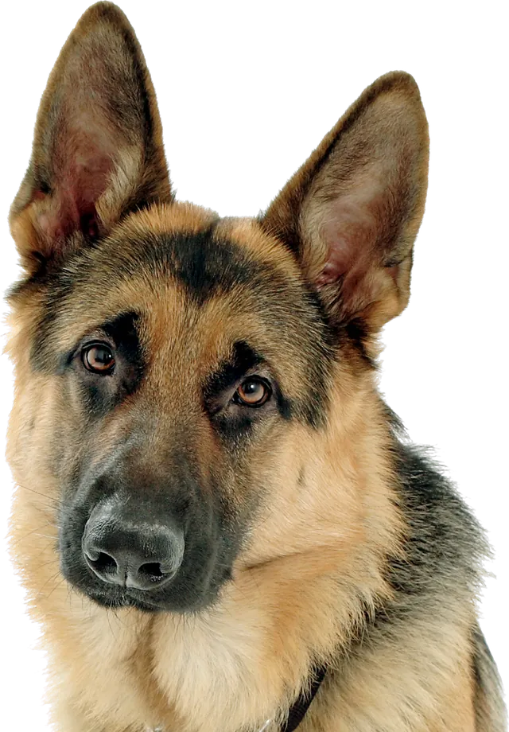
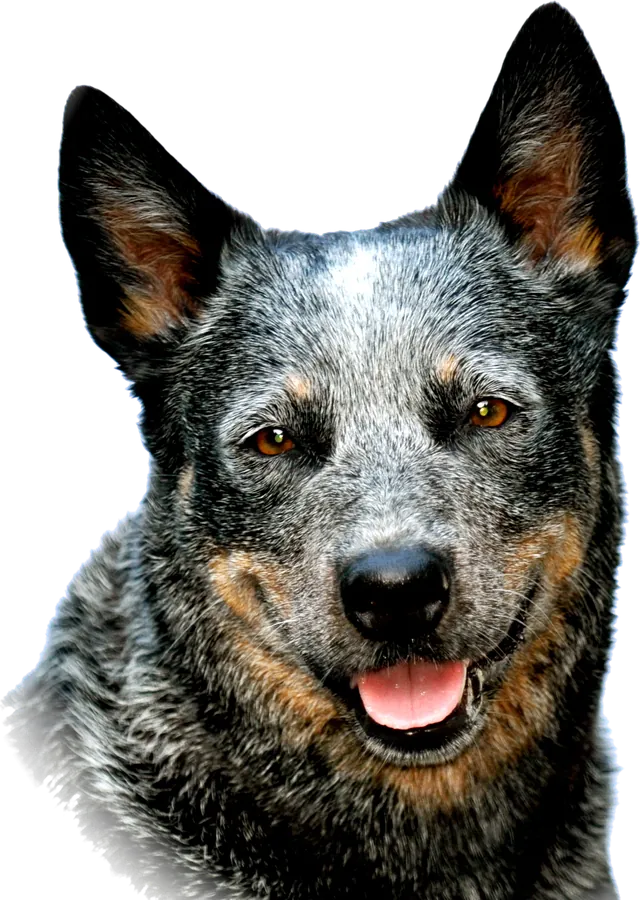

El escáner
Una barra de luz recorre a la mascota y, a su paso, la vuelve radiografía. Abre la página y, con el mouse, sigue al cursor.


Centro de Atención Veterinaria en San Pedro. Consulta, cirugía, rayos X, grooming y hotel, con emergencias 24/7.
Agendá tu cita ¿Es una emergencia? 2253-4184Tenés activado «Reducir movimiento»: ves una versión sin desplazamientos. Hoja de muestra · no se publica
Así como el negatoscopio ilumina una radiografía, tu página ilumina lo que la clínica hace por dentro: diagnóstico, cirugía, cuidado y cariño. La noche y la luz turquesa dan confianza; la mandarina pone la calidez y marca dónde actuar.
Los azules salen de tu logo. La mandarina es su contrario exacto: hace que el azul se vea más profundo y que el botón salte a la vista.
Así se reparte en una pantalla: casi todo noche y marino, la luz en dosis y la mandarina donde importa.
Nosotros
lo vemos.
Bricolage Grotesque, muy gruesa. Tiene curvas vivas y remates suaves: se siente cercana sin perder seriedad.
Todo lo que tu peludito necesita, en un solo lugar
La misma letra para los títulos de cada sección.
Contamos con servicio de rayos X digitales, una herramienta fundamental para detectar fracturas, lesiones y otras condiciones que pueden afectar el bienestar de tu peludito.
Y en su versión para leer, cómoda en el celular.
Una barra de luz recorre a la mascota y, a su paso, la vuelve radiografía. Abre la página y, con el mouse, sigue al cursor.

Tus botones son placas de identificación, como las que entregan a sus pacientes, con su ojal. Al pasar el mouse se balancean y el texto gira.
Lo activo no cambia de color: se enciende la campana del estetoscopio. Tocá un servicio.
Cada servicio vive en una ficha clínica con las esquinas recortadas. La mascota se sale del marco y, al pasar el mouse, el escáner la revisa.
Un diagnóstico preciso es el primer paso para cuidar su salud: detectamos fracturas, lesiones y otras condiciones.
Un segundo hogar mientras no estás: habitaciones cómodas, zonas verdes y atención veterinaria 24/7.